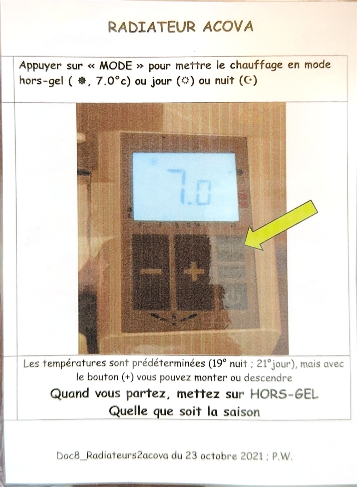
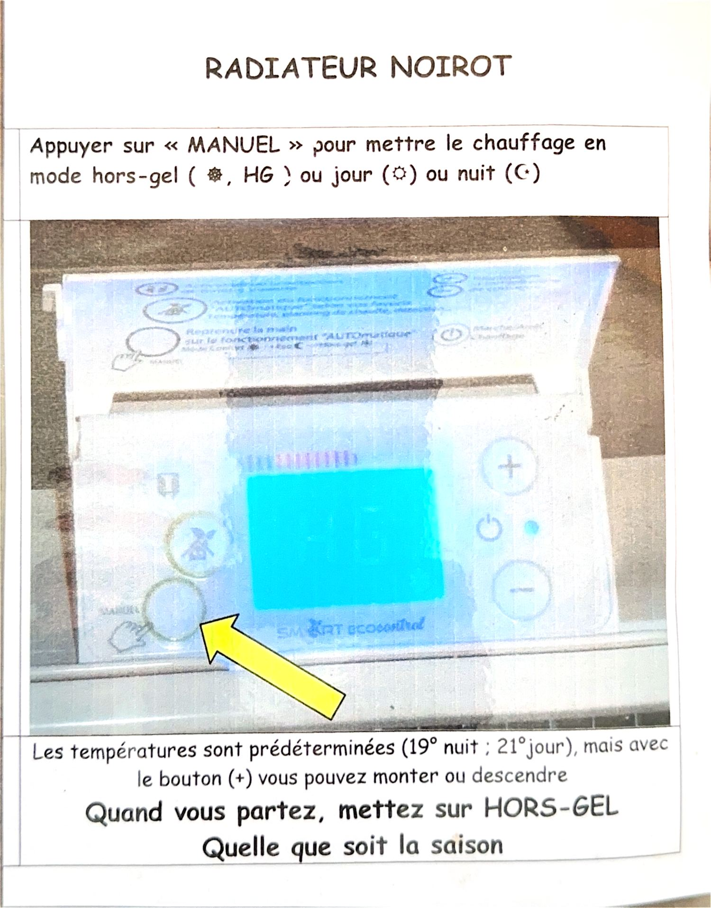
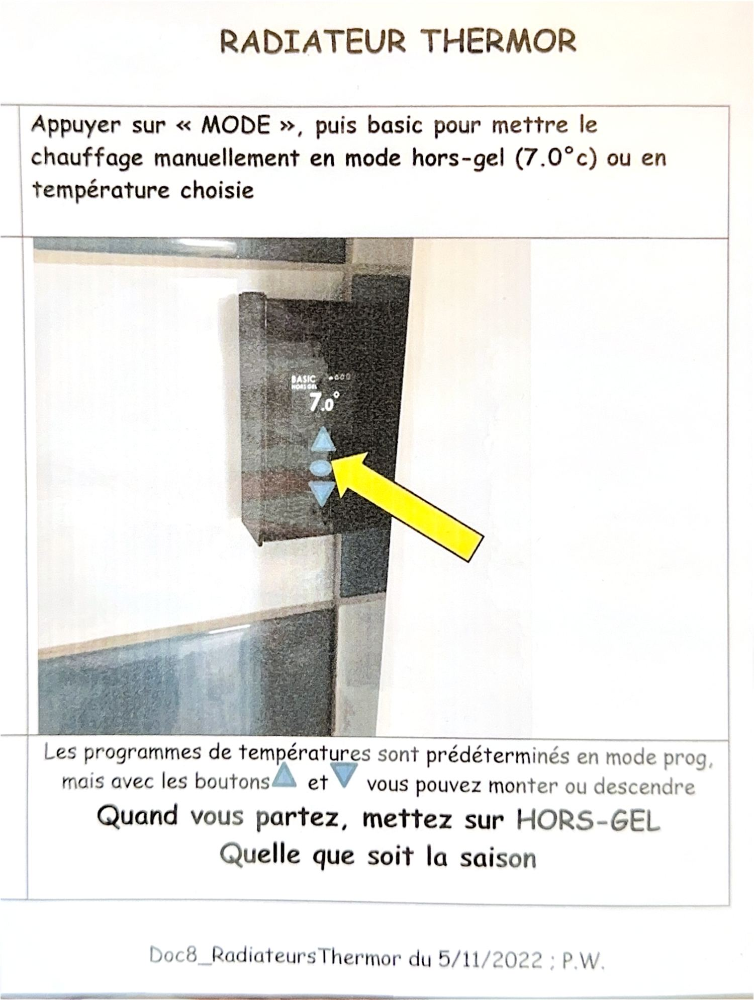
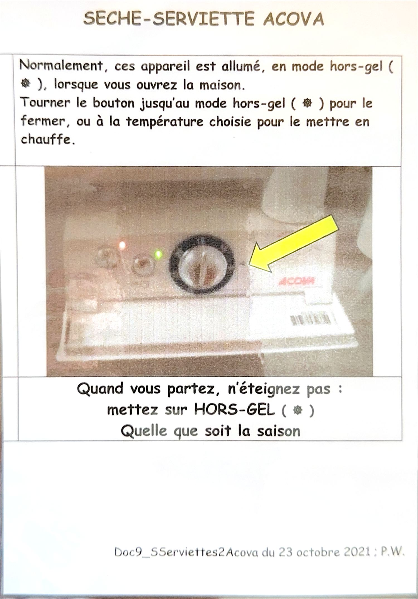

La règle à retenir : en partant, mettez tous les appareils sur HORS-GEL — quelle que soit la saison. On ne les éteint pas.
Repère Reconnaître le mode hors-gel
Selon la marque, le hors-gel s'affiche différemment :
- ❄ ou 7.0
- Hors-gel : l'appareil ne chauffe que pour éviter le gel.
- HG
- Même chose, abrégé sur les modèles Noirot.
- ☀ / ☾
- Mode jour (21 °C) et mode nuit (19 °C).
Acova Radiateur Acova
Appuyez sur MODE pour choisir hors-gel (❄, 7,0 °C), jour (☀) ou nuit (☾).
- 🌡️ Températures prédéterminées : 19 °C la nuit, 21 °C le jour.
- ➕ Les boutons + et − permettent de monter ou descendre.

Noirot Radiateur Noirot
Appuyez sur MANUEL pour choisir hors-gel (❄, HG), jour (☀) ou nuit (☾).
- 🌡️ Mêmes températures prédéterminées : 19 °C nuit, 21 °C jour.
- ➕ Réglage fin avec les boutons + et −.

Thermor Radiateur Thermor
Appuyez sur MODE, puis sur basic pour passer en manuel : hors-gel (7,0 °C) ou température choisie.
- 🗓️ En mode prog, les programmes de température sont prédéterminés.
- 🔼 Les flèches ▲ et ▼ permettent de monter ou descendre.

Acova Sèche-serviettes
À l'ouverture de la maison, ces appareils sont normalement déjà allumés en hors-gel (❄).
- 🔥 Pour chauffer : tournez le bouton sur la température voulue.
- ❄️ Pour arrêter : tournez le bouton jusqu'au mode hors-gel (❄).

Ne l'éteignez pas en partant : mettez-le sur hors-gel (❄).